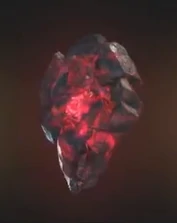
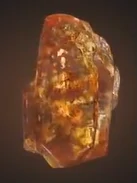

| название |
описание |
цвет |
картинка |
| Камень пространства |
назван так из-за своей кубической формы. Он способен предоставить доступ к любой точке во вселенной, если его использовать правильно. |
синий |
 |
| Камень разума |
был оружием, которое использовало жёлтый камень разума, хранящийся в синем компьютерном модуле, который также скрывал присутствие камня. |
желтый |
 |
| Камень реальности |
В отличии от всех, ранее встреченных камней бесконечности, у которых содержащие ячейки - твёрдые, эфир выглядит как тёмная, красная и вязкая жидкость. |
красный |
 |
| Камень силы |
это защитный корпус пурпурного камня бесконечности. Камень является источником невероятной силы, который, при использовании всего потенциала, содержит достаточно мощи, чтобы уничтожить целую планету. |
пурпурный |
 |
| Камень времени |
древний артефакт, подвеска, созданная Агамотто, первым верховным чародеем, предположительно для содержания и управления силой камня времени, находящегося внутри |
зеленый |
 |
| Камень души |
Мало что известно о Камне души. Однако, согласно древним текстам Вонга, камень души может оказаться самой большой угрозой из всех камней бесконечности. |
оранжевый |
 |